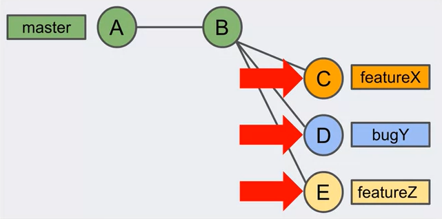

Each commit is a snapshot of the entire project. So one might think that with every commit git stores many copies of the same file.
But this is not howw git works. Behind the scenes, git is very efficient at storing commits. Each unique files is stored only once.
Project History
The collection of commits contain the History of the project.
You can review the history.
You can "undo" the change.
Branches
All commits belong to a branch. It is an independent line of development of the project.
By default there is a single branch, it's called master.
Branches can be used to independently work on the project without disrupting the rest of the project.
The independence of branches allows teams to scale their work.

Here commit B is not aware of what is going on in other branches.
Pull Request
A request to merge your master branch into another branch.
PRs can include team review and testing , improving product quality.
It is a request for others to review and approve the changes made to the project on a branch.
Version Control
From the perspective of
CONTENT: It manages a collection of changing and improving files which we can call a project. The complete history of the project is tracked and available
at any time.
TEAMS: It also supports teams working on that colection of files. Helps support collaboration on the project and improves quality through facilitating team communication & reviews.
AGILITY: The ability to adapt quickly and constructively to a changing environment. It does this by managing small changes to a project and by allowing you to
easily fix, test or undo any ideas and changes that the team makes.